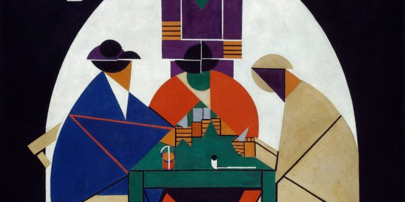
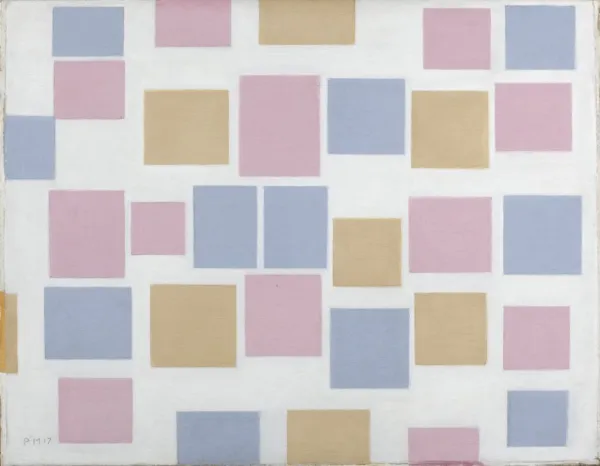

El neoplasticismo surge en 1917 en Países Bajos, en torno a la revista De Stijl, fundada por Theo van Doesburg. Piet Mondrian, desde su búsqueda de un arte universal, consolidó la gramática visual del movimiento.
Durante la década de 1920, las ideas de De Stijl se extendieron al diseño gráfico, mobiliario y arquitectura. Gerrit Rietveld, con la Casa Schröder (1924), llevó estos principios a un edificio ícono del movimiento.
Su influencia permea la Bauhaus, el diseño modernista y el minimalismo. La reducción a lo esencial y el uso racional del color siguen inspirando prácticas contemporáneas.